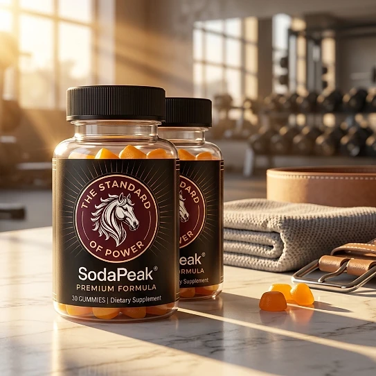
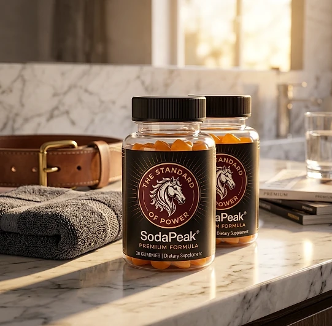
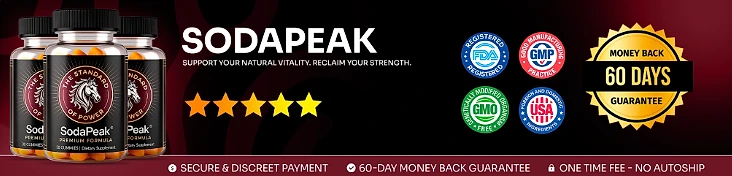

What Is SodaPeak And How Does It Work?
SodaPeak is a dietary supplement in gummy form designed to support male energy, stamina, and overall vitality for men who want to address the low energy, fading drive, and loss of confidence that can build up with age and demanding routines through a natural, dependable approach — without complicated routines or temporary quick fixes.
It utilizes a simple daily gummy with a proprietary blend of Muira Puama, Maca, Catuaba, Green Tea, Caffeine, Ashwagandha, L-Arginine, Tribulus Terrestris, and Horny Goat Weed to support physical endurance, daily drive, and the body's response to everyday stress, helping the body maintain its natural balance throughout the day.
The ingredients in SodaPeak are concentrated botanical extracts that, according to the official website, work in an integrated way to support daily male energy, stamina, and vitality, particularly for men who prefer one simple gummy a day over multiple products or complicated plans.
Rather than acting as a short-lived artificial fix, SodaPeak focuses on a whole-formula approach, working gradually alongside daily routines to help maintain steady energy, physical vigor, and long-term wellness.
With consistent daily use, many users report more energy and focus during the day, greater confidence, and a gradual sense of renewed vitality, especially when combined with a balanced diet, good sleep, and regular exercise.
From a practical standpoint, SodaPeak is a daily male vitality gummy designed to support wellness from within — helping you stay active, energized, and in control of your health.
Manufactured in the USA with globally sourced ingredients, according to the official website, and produced in a GMP facility, according to the product label, SodaPeak is designed for regular daily use, focusing on safety, purity, and quality for those seeking a natural, non-prescription route to everyday male vitality.
SodaPeak Ingredients
Every gummy of SodaPeak contains an 82 mg proprietary blend of nine ingredients listed on the Supplement Facts panel, equivalent to approximately 567 mg of dry powders and chosen to support energy, stamina, and male vitality as part of a consistent daily routine:
Muira Puama Extract: A botanical traditionally used to support physical strength and daily stamina.
Maca Extract: An adaptogenic root included to support steady energy and help the body handle physical stress.
Catuaba Extract: A traditional tonic associated with physical endurance and overall vitality.
Green Tea Extract: A natural source of antioxidants that helps protect cells against oxidative stress.
Caffeine (5 mg): A small amount of a familiar stimulant that supports alertness and focus.
Ashwagandha: A time-tested adaptogen that helps the body respond to everyday stress.
L-Arginine: An amino acid the body uses to produce nitric oxide, included to complement the formula's support for circulation.
Tribulus Terrestris: A plant extract commonly found in men's vitality formulas.
Horny Goat Weed Extract: A traditional botanical that rounds out the blend.
Together, these ingredients work synergistically to support vigor, endurance, and constant drive from within. Because it is a proprietary blend, the label lists the total amount and the caffeine content, but not the amount of each extract. The gummy base is made with corn syrup, cane sugar, apple pectin, and natural flavors, with 10 calories and 3 g of added sugar per gummy.
SodaPeak is designed for daily use, offering a natural, non-prescription approach to supporting male vitality, without complicated routines or aggressive synthetic compounds.
SodaPeak Side Effects
SodaPeak is generally considered well tolerated and is designed for men of different ages and lifestyles who are looking for a safe, natural, and balanced approach to energy and vitality, especially those who prefer an easy one-gummy daily routine to support stamina, drive, and well-being without resorting to risky solutions with severe side effects.
All ingredients used in SodaPeak are described on the official website as high-purity and naturally derived, the label states that the gummies are produced in a GMP facility, and SodaPeak is manufactured in the USA with globally sourced ingredients, reinforcing consistency, safety, and reliability.
With no widespread reports of serious side effects, SodaPeak is generally considered a well-tolerated option. Because it is an active, stimulating formula that contains caffeine, the official website recommends that people with pre-existing health conditions, especially heart problems or high blood pressure, consult a healthcare professional before use, and the label says to discontinue use and consult your doctor if any adverse reactions occur. It is not intended to diagnose, treat, cure, or prevent any disease, and individual results may vary.
According to the label, anyone who is pregnant or nursing, takes medications, or has a medical condition should consult a doctor before using SodaPeak. The official website adds that it is not intended for individuals under the age of 18, ensuring it fits safely within each person's wellness plan.
SodaPeak Dosage
The recommended SodaPeak dosage is one gummy once a day, and it is designed to fit easily into a daily routine, making consistency simple and convenient. Formulated as an easy chewable gummy, it requires no powders to mix, no drinks to prepare, and no capsules to swallow.
The recommended approach, as printed on the label, is to take one SodaPeak gummy once daily as a dietary supplement. For best results, the official website suggests taking SodaPeak in the morning or about 30 minutes before your main activities or workouts, or as directed by a qualified healthcare professional, which allows its ingredients to work consistently.
For best results, consistency is key. Each bottle contains 30 gummies, a one-month supply, and because botanical support for energy and vitality builds gradually, many customers make it part of an ongoing wellness routine.
There is no need for complex schedules or multi-step routines. One simple daily gummy is designed to build lasting support gradually alongside a balanced diet, good sleep, and an active lifestyle. The label also advises storing the bottle at room temperature (59–86 °F), tightly closed and out of the reach of children.
As with any dietary supplement, it's important not to exceed the recommended dose and to check the label on your bottle. SodaPeak works best when used regularly, combined with proper hydration, balanced nutrition, and healthy daily habits.
SodaPeak – Refund Policy
You can order SodaPeak with confidence, knowing that every purchase is protected by a 60-day guarantee from the date of purchase. This allows you to try the formula and decide if it delivers the support you expect.
According to the refund policy on the official website, refund requests can be made after a minimum trial period of 30 days and must be started within 60 days of the purchase date. Only sealed bottles are eligible, shipping and customs fees are not refunded, return shipping is paid by the customer, and a 20% restocking fee is deducted.
How the refund process works: If you decide SodaPeak is not right for you, email customer support to request a return authorization code, then follow the return instructions provided. Once the returned items are received and verified, your refund will be issued to the original payment method, and you will receive a confirmation email.
Customer Support Contact Information: contact@customercs.com or +1 (855) 889-3137, as listed on the official website. The team typically replies to emails within 48 business hours.
Refund Processing Time: After your refund is processed, it may take 5 to 10 business days to appear on your statement, depending on your financial institution.
This refund policy is designed to give customers a clear and transparent experience when trying SodaPeak.
SodaPeak Customer Reviews
-
Michael Thompson — Houston, TXVerified Purchase – 6 Bottles
“If it wasn’t for SodaPeak, I’d still be feeling stuck, overwhelmed, and wondering if I’d ever regain my confidence and vitality… But just a few weeks in, everything changed. Thanks to SodaPeak, I’ve reclaimed my sense of purpose and strength, and my relationships have never been better. It’s like having a roadmap to the man I always knew I could be!”
-
James Miller — Denver, COVerified Purchase – 6 Bottles
“I was skeptical at first, but SodaPeak completely turned my life around. Before, I felt like I was constantly battling low energy, self-doubt, and a lack of direction… Now, I wake up each day with focus and confidence, ready to take on anything. SodaPeak made me feel unstoppable again!”
-
Robert Anderson — San Diego, CAVerified Purchase – 6 Bottles
“Before SodaPeak, I felt like I’d lost my edge—always tired, frustrated, and unsure of what steps to take next. But within weeks, everything started to shift. Thanks to SodaPeak, I’m more energized, focused, and driven than I’ve been in years. It’s the ultimate tool for men who refuse to settle!”
SodaPeak – Where To Buy
SodaPeak is sold through its official website, so if you decide to try it, it's important to be careful about where you purchase it. The official website is the only sales channel the manufacturer lists, and it does not point to marketplaces such as Amazon, eBay, or Walmart.
Listings on third-party platforms may look similar but cannot be verified as authentic, raising concerns about safety, quality, and ingredient freshness. Products purchased outside the official source may not be covered by the 60-day guarantee.
For this reason, most customers recommend purchasing SodaPeak only through the official website. Buying directly from the official source ensures you receive the authentic original product, manufactured in the USA, with access to customer support and the full guarantee. According to the official website, every purchase is a one-time order, with no automatic renewals, hidden fees, or surprise charges.
To avoid counterfeit batches and ensure maximum quality, always verify that you are ordering from the official SodaPeak website before completing your purchase.
To ensure you’re getting the authentic product, most users choose to visit the official website.
Is SodaPeak A Scam?
Based on what the official website and the product label disclose, SodaPeak does not appear to be a scam. It is a real gummy supplement, sold through an established retailer, and formulated to support male energy, stamina, and vitality as part of a consistent routine.
The ingredients used in SodaPeak — Muira Puama, Maca, Catuaba, Green Tea, Caffeine, Ashwagandha, L-Arginine, Tribulus Terrestris, and Horny Goat Weed — are well known in the wellness field, and the label publishes a Supplement Facts panel with the full ingredient list and the total amount of the blend for transparency.
In addition to its simple formula, SodaPeak is manufactured in the USA with globally sourced ingredients, according to the official website, and produced in a GMP facility, according to the product label, with a focus on safety, purity, and consistency.
Many users report more energy, focus, and confidence throughout the day and an easy daily habit, making SodaPeak a practical option for those seeking natural support for male vitality. Results vary from person to person, and no supplement replaces medical care or prescribed treatment.
SodaPeak is backed by a 60-day guarantee, and orders are one-time purchases with no automatic renewals, recurring charges, or hidden fees. The refund rules, including the sealed-bottle requirement and the restocking fee, are published on the official website, which underscores the manufacturer's transparency with customers.
If you're looking for a simple daily gummy to support energy, stamina, and well-being without complicated routines, SodaPeak is worth considering — especially when purchased directly from the official website.
For those who want to verify product details or check current availability, the official SodaPeak website remains the safest option.

Check Availability On Official Website
